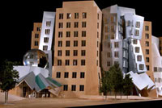
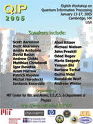

|  | |||
|
General information Schedule Registration Accomodation Travel information Local information  |
Travel to the conference Book flights to Logan airport in Boston, Massachusetts. Directions to MIT from the airportSubwayFrom baggage claim, walk outside and take the 22 or 33 bus to the airport subway station. Then take the blue line inbound four stops to Government Center, the green line (any of the B,C,D or E lines) West one stop to Park Street and the red line two stops North to Kendall/MIT. The trip takes about 30 minutes and costs $1.25.
Driving
VisasPlease note that citizens of certain countries need a visa to enter the US. If you need a visa, we encourage you to register early. You may need a confirmation of acceptance to the conference for your visa application. For further assistance with visas, please send email to qip2005-info@mit.edu. | ||